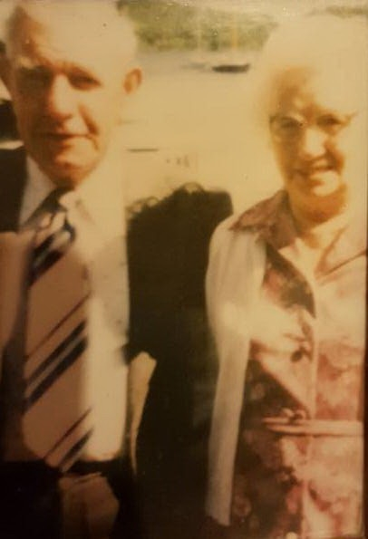
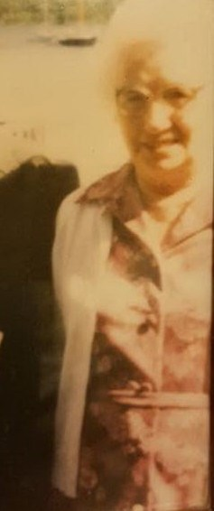
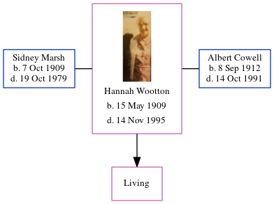

Hannah Kathleen Marsh (née Wootton) 1909 - 1995
[ Home ] | [ Calendar ] | [ Surnames Index ] | [ Errors ] | [ Family History ]Hannah Wootton, the wife of Albert Edward Cowell (the first cousin once-removed on the mother's side of Nigel Horne), was born in Woodnesborough, Kent, England on 15 May 19091,2,3,4, was baptised there at St Mary the Virgin on 25 Jul 1909. She was married twice - to Sidney Marsh (on 10 Dec 1932 in Minster, Thanet, Kent, England) Albert Cowell (in Oct/Nov/Dec 1950 in Thanet)5. She has 1 surviving child with Albert Cowell, Brenda E F. On 2 Apr 1911, she was living at her birthplace1.
She died on 14 Nov 1995 in Ramsgate, Kent, England3 (age: 86).
Citations
- 1911 England Census Online publication - Provo, UT, USA: Ancestry.com Operations, Inc., 2011.Original data - Census Returns of England and Wales, 1911. Kew, Surrey, England: The National Archives of the UK (TNA), 1911. Data imaged from the National Archives, London, England.
- England & Wales deaths 1837-2007 - Findmypast
- England & Wales, Death Index: 1984-2005 Online publication - Provo, UT, USA: The Generations Network, Inc., 2007.Original data - General Register Office. England and Wales Civil Registration Indexes. London, England: General Register Office. © Crown copyright. Published by permission of the Cont
- England Births & Baptisms 1538-1975 - Findmypast
- England & Wales, Marriage Index: 1916-2005 Online publication - Provo, UT, USA: The Generations Network, Inc., 2009.Original data - General Register Office. England and Wales Civil Registration Indexes. London, England: General Register Office. © Crown copyright. Published by permission of the Cont
Media
Albert Edward Cowell - Hannah Kathleen Wootten

Hannah Kathleen Wootten

England & Wales deaths 1837-2007 - BMD/D/1995/11/80670500
England & Wales births 1837-2006 - BMD/B/1909/2/AZ/000675/325
England & Wales marriages 1837-2008 - BMD/M/1932/4/AZ/001353/002
England & Wales marriages 1837-2005 - BMD/M/1950/4/AZ/001365/078
England Births & Baptisms 1538-1975 - R_885452040
Kent Baptisms - GBPRS/CANT/B/96020972
Family Tree
Map
Generated by ged2site. Last updated on Jul 3, 2024
Known Issues
Baptism information not used to determine a parent
No records of living with anyone
1939 UK register information missing